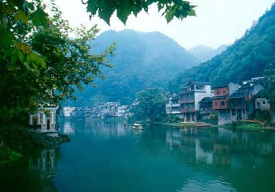

| 雄峰俊岭 | 滔滔大河 | 都市盛景 | 互动 | |||||
|
长途汽车在群山中转悠了两个小时，终于到达了我们此行的目的地――湘西凤凰。 一下车，我们就直奔凤凰的新华书店，买回了地图和沈从文先生的著作《边城》。事后我总是得意于一下车就奔新华书店的明智之举，为此我们不知省了多少奔波之苦。 依地图的指引，我们住进了沱江边上的小客栈，是那种古老的吊脚楼，走进去会发出吱呀吱呀的声音。屋主是个竹雕艺人，所以厅内摆放的全是大大小小的竹雕作品，精雕细琢得栩栩如生，直看得我们目瞪口呆。而且房价也不贵，两个人才三十块钱一晚上，放在深圳这可是做梦也不敢想的美事！ 到凤凰当然首先去逛古城了，依山而建的古香古色的建筑，悠悠长长的小巷里保存完好的青石板路，摇摇晃晃的大红灯笼，店铺里大幅大幅色彩鲜艳的蜡染，手工制的热气腾腾的姜糖，还有各种民族味的服装，可把我跟玲乐坏了，钻进店内，一人挑了一套蓝布印白花的小襟衫，系上同色小头巾，再换上那路手工做的绣花鞋，对着镜子一看，活脱脱就是两个苗家少女嘛。并肩走在街上，嗬，回头率猛增。（附一句：那套蓝布衣服的使用率就是那三天，后来回了深圳可是打死我也不敢穿的。）  华灯初上，虹桥上的夜市已经热闹开场了。去凤凰就一定要去虹桥，它可是黄永玉老先生亲自设计的哦！虹桥的夜宵也是凤凰最有名的了。我和玲都是超级馋猫，虽然为了吃夜宵可是连晚饭都没有吃，可到了虹桥才发现，肚子还是不够用。这里的夜宵不仅多而且便宜得让人不敢相信：烤得香气四溢的铁板烧才一毛钱一串，两块钱就是一大把了；红艳艳的龙虾剥干净摆成圆形放在盘中，叫人想不吃都很难；田螺在锅中炒得滋滋作响火光四冒，还有烤得香香的玉米，烧得糯糯的糍粑，炸得金黄的小螃蟹，咬上一口，又香又脆，再吃上一碗爽滑的米豆腐，这么多美食面前，什么减肥呀形象呀都被我们抛到了脑后，只恨自己的胃不争气，没等我们摊头吃到摊尾就实在装不下了！ 那天猛吃的后果就是当晚我们哪里也没有去，两人绕着古城转悠了三圈，就想能快点消化就好了。 到凤凰的第二天，我们去了离小城约五公里的奇梁洞。 它分为上中下三层，最窄处只有容一人侧身而过，最低处要猫着腰才能经过，洞内蜿蜒曲折得像迷宫一样，数不清的钟乳石千奇百怪，形态各异而长短不一，更有许多好听的名字，什么飞龙在天、众猴拜寿、一柱擎天等等，大自然的鬼斧神工让我们啧啧称奇。再加上各色灯光的照射，更让人觉得神秘莫测美不胜收！只是洞内的气温比外面要低许多，越往上走越冷！ 下午的时候，我们来到了美丽的沱江边上，吹着凉凉的晚风，放眼望去，朵朵白云浮在蓝天上，悠悠绿水缓缓绕城而下；两岸高高矮矮的吊脚楼上，许多盏大红灯笼在摇摇晃晃；岸边古老的水车不知疲倦地转动着，喷洒出晶莹剔透的水花；间或一叶小舟顺流而下，美丽的苗家姑娘唱起了动听的情歌。那一刻，仿佛一切都静止了，只有一种悠闲的心情来享受这份恬静的时光 ！ 夜幕降临时，我们来到了古湘山庄，围坐在熊熊燃烧的篝火旁，观看了极有民族特色的表演。土家族舞蹈的热情奔放，苗歌的悦耳动听，上刀梯的惊心动魄，还有韵味十足的哭嫁，每一个节目都能博得全场热烈的掌声。 还有不少观众被请上台去，一起玩游戏。丢香包、猜新娘、学跳苗舞，唱苗歌，最后大家手拉手围着篝火跳起了圆圈舞，真是玩了个不亦乐乎！ 晚上十点了，我们划了一条小船，在沱江里静静的漂着。小城已经渐渐睡了，两岸零星地亮着几盏灯笼，一闪一闪的，一切都静下来了。 沱江无言，轻风无语！ |
||||